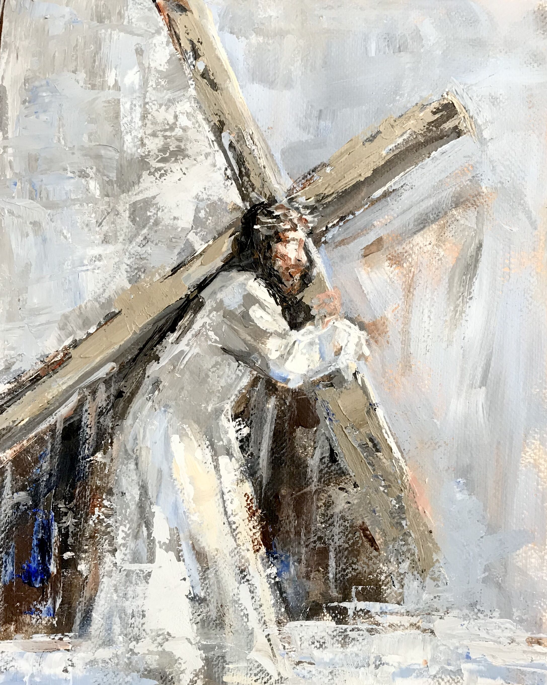
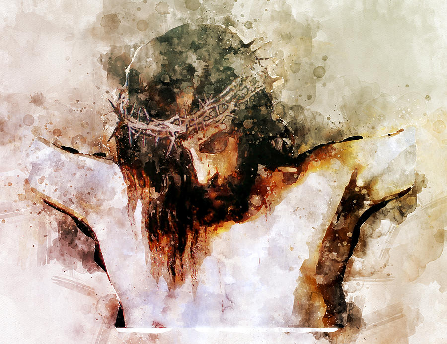
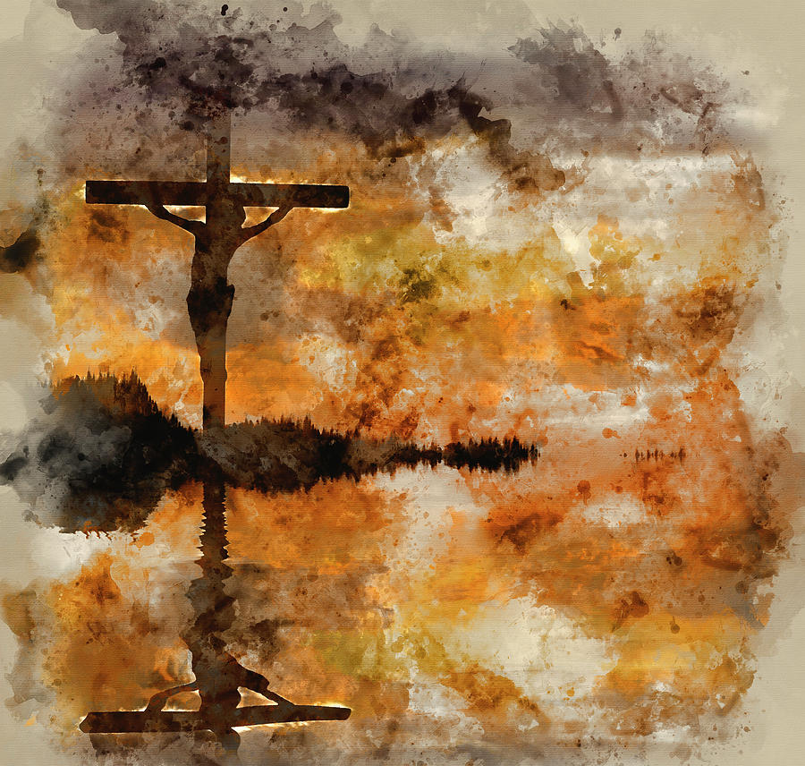

These are depictions of Christ on calvary that have impacted me:
"Partaking of a bitter cup without becoming bitter is likewise part of the emulation of Jesus." - Elder Maxwell

Chandra Savaso: "Messiah"
I thought this was a cool depiction of the Savior carrying the Cross. I like the abstractness of it, as this is not a typical picture that we see in the Church.

Mata: "Christ on the cross"
When I look at this picture, my eyes are drawn to the crown of thorns and His eyes. The thorns in the crown are large and shows how real it could have been, without being overly graphic.

Matthew Gibson: "Jesus Christ Crucifixion on Good Friday"
I thought the reflection on the water was cool - especially considering Christ is the living water. Again, I liked how this was a piece of art that is not really used in the Church.